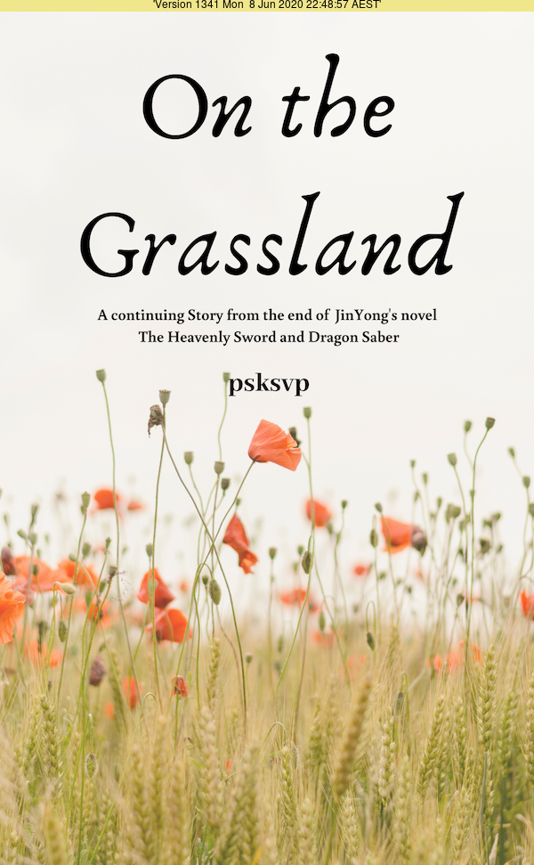

On The Grassland is a continuing story from the end of JinYong’s novel The Heavenly Sword and Dragon Saber
Copyright © 2019 - 2020 by Pongsak Suvanpong All Rights Reserved psksvp@gmail.com

This version is suitable for device with small and large screen like your laptop/desktop or tablet.
___i
|---|
|[_]|
|:::|
|:::|
`\ \
\_=_\ ascii art by jgs
This offers ebook reader like experience, however, it is still in experimenting stage. It works well in desktop mode, but not on the mobile and tablet. Please let me know if you have any problem viewing. psksvp@gmail.com
______ ______
_/ Y \_
// ~~ ~~ | ~~ ~ \\
// ~ ~ ~~ | ~~~ ~~ \\
//________.|.________\\
`----------`-'----------'ascii art by jgs
ePub ebook format is supported natively on all Apple Devices (Both iOS and MacOS through Books.app). On Android device, you can use Google Play Book app to read ePub. The download can be found here